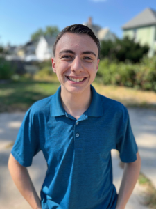

About Me

Hi there!
I'm Dylan, a passionate writer and aspiring web content creator/tech writer with a B.A. in English from the University of Massachusetts Amherst. With a concentration in creative writing and a certificate in Professional Writing and Technical Communication, my education has prepared me for a long, multi-faceted career as a writer, whatever form that writing may take. When I'm not writing, I work part-time in food service to provide for my wife and I. I also enjoy playing video games and livestreaming when I find the time!
What you should know:
Writing has always been a great asset for me, especially in its ability to express my faith and give form to my feelings, and my time at UMass Amherst has been but the start of my long journey with it. It was there that I was able to experiment with both the creative writing I am passionate about and the technical writing I am eager to learn.
I am interested in every facet of writing and the writing process. In immersing myself in multiple distinct genres, I am hoping to become a versatile word-slinger. Throughout my time at UMass alone, I have been able to produce a creative writing portfolio and multiple pieces of professional/technical writing from my courses.
Being a tutor in UMass' writing center was such a privilege for me as well, as it gave me the chance to combine my love of writing with my desire to help others. I was exposed to pieces from many different disciplines and dialects, and in assisting students with these pieces, my passion and knowledge of writing has continued to grow.
As I leave college behind, I am pursuing a career that allows me to use my passion for writing as a means of serving others. My experience in the Professional Writing and Technical Communication certificate program at UMass has prepared me for a career in technical writing or web content development, which I would love to explore more if the opportunity arises!